CPU

CPU é a sigla para Central Process Unit, ou Unidade Central de Processamento. Ele é o principal item de hardware do computador, que também é conhecido como processador. A CPU é responsável por calcular e realizar tarefas determinadas pelo usuário e é considerado o cérebro do PC. Para explicar melhor sobre esse componente, o Canaltech conversou com Yuri Daglian, Sales Applications Engineer da Intel.
Armazenamento
Em termos simples, computadores modernos ou terminais se conectam a dispositivos de armazenamento diretamente ou por meio de uma rede. Os usuários instruem os computadores a acessar dados desses dispositivos e a armazenar dados neles. No entanto, em um nível fundamental, o armazenamento de dados se baseia em dois princípios: a forma em que os dados são capturados e os dispositivos nos quais eles são gravados e armazenados.
Memória
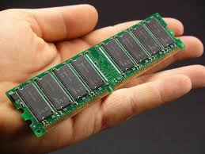A memória do computador, também conhecida como memória principal ou memória primária, fornece armazenamento temporário para tarefas computacionais, tornando-a essencial para a operação de um computador. Os dados são armazenados na memória para que possam ser enviados para a unidade de processamento central (CPU, Central Processing Unit) para cálculos e um aplicativo possa recuperar dados quando necessário.
Fonte de alimentação
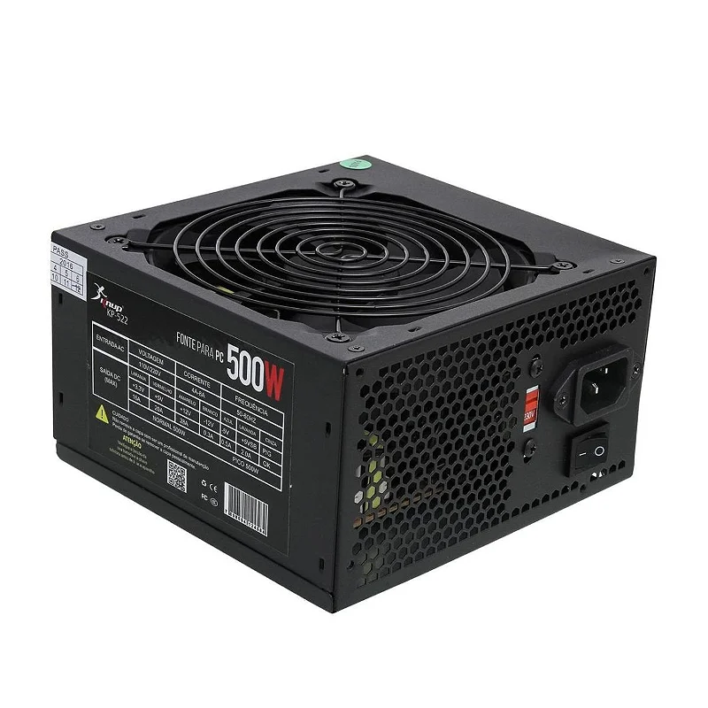A fonte de alimentação (ou PSU, de Power Supply Unit) é o componente do computador responsável por converter a energia elétrica da tomada, que é em corrente alternada (CA), em corrente contínua (CC) de baixa voltagem, necessária para alimentar todos os outros componentes internos do PC. Ela não só fornece a eletricidade para a placa-mãe, processador e outros dispositivos, mas também garante que essa energia seja estável e limpa, protegendo o hardware contra flutuações da rede elétrica.
Teclado

Um teclado é um dispositivo de entrada usado para digitar caracteres, números e símbolos num computador ou noutro dispositivo eletrónico, ou um instrumento musical com teclas que produzem sons quando pressionadas. Como periférico de computador, é essencial para a entrada de dados e comandos, e pode ser físico (com teclas táteis) ou virtual (num ecrã).
Compre aquiMonitor de vídeo

Um monitor de vídeo é um dispositivo eletrónico de saída que exibe informações visuais, como imagens, vídeos e textos, gerados por um computador ou outro equipamento eletrónico. Funciona como uma tela onde o utilizador vê e interage com o conteúdo digital, recebendo sinais da placa gráfica do computador para processar e mostrar a imagem.
mouse

Um mouse, ou rato em Portugal, é um dispositivo de entrada para computador, movido manualmente sobre uma superfície, que permite controlar o movimento de um cursor (geralmente uma seta) na tela do monitor. Funciona como uma interface entre o utilizador e o computador, com botões para clicar e uma roda para rolar, facilitando a interação com programas e a execução de tarefas.
Impressora
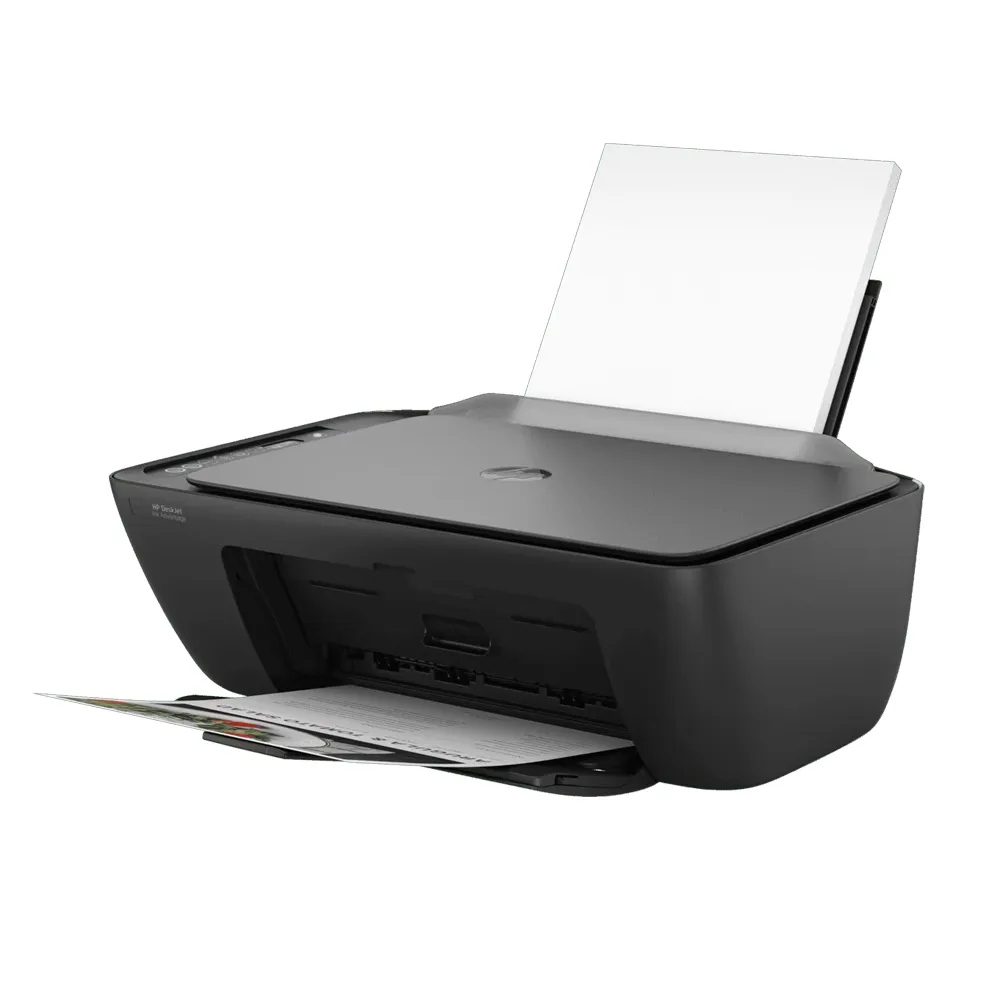é um dispositivo periférico de saída que recebe dados de um computador ou outro dispositivo e os transforma em uma cópia física, geralmente em papel, de documentos, imagens ou gráficos
Plotter
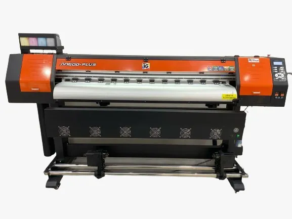impressora especializada em criar imagens e textos de grande formato e alta qualidade, utilizando tecnologia de jato de tinta ou outros métodos, para produzir materiais como mapas, plantas de engenharia, banners, adesivos e cartazes.
Scanner
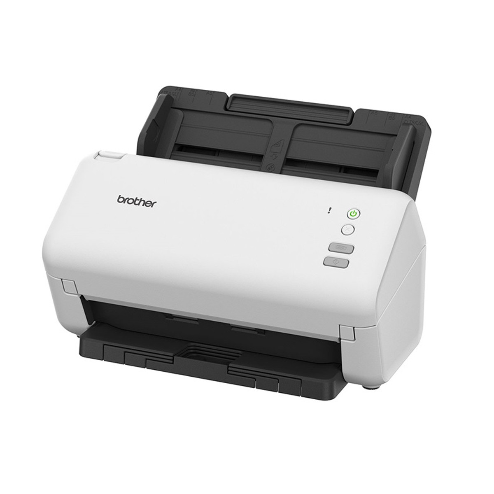Um scanner é um dispositivo informático que digitaliza documentos físicos, fotografias ou outros objetos, convertendo-os em arquivos digitais que podem ser visualizados, editados e armazenados num computador.
Gabinete
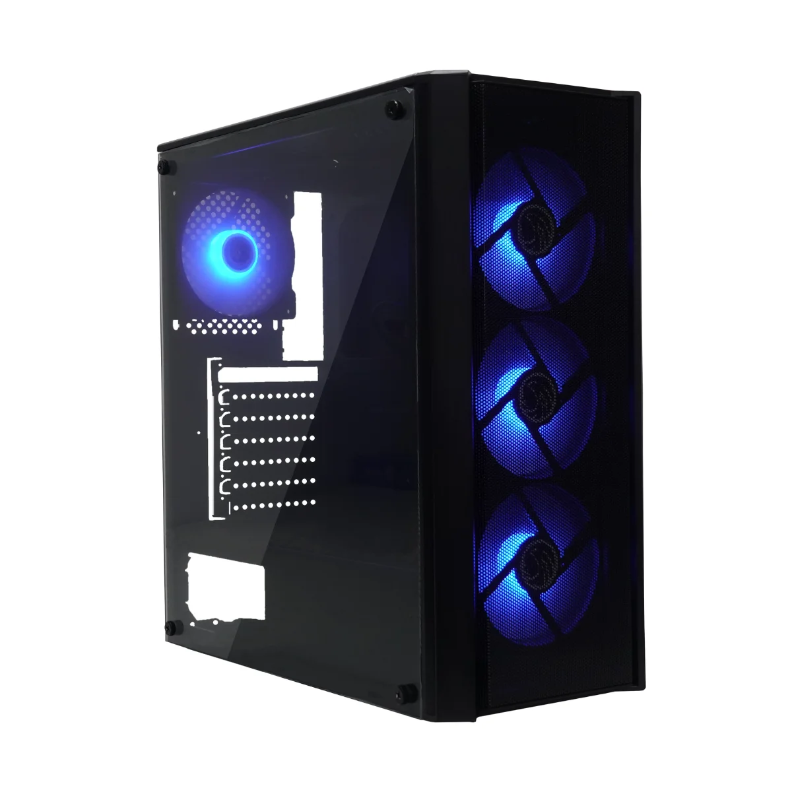o móvel de cozinha que abriga a pia e armários, o compartimento metálico que protege os componentes de um computador, ou o escritório e a equipe de uma autoridade (como um presidente ou político) que presta apoio administrativo e de assessoria.
Web Cam

Uma webcam é uma câmara digital de vídeo que capta imagens e som, transmitindo-os em tempo real através da Internet para um computador ou outro dispositivo.
Caixas de som

Uma caixa de som é um dispositivo eletrónico que converte sinais elétricos em ondas sonoras, transformando a energia de impulsos elétricos em som audível para o ouvido humano.
Microfone
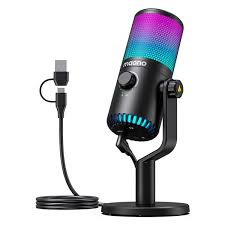Um microfone é um dispositivo transdutor que converte ondas sonoras (energia acústica) em sinais elétricos.
Head Set

O headset é um modelo de fone de ouvido mais robusto que acompanha, ainda, um microfone (fixo, destacável, móvel ou retrátil). Ele pode ser usado por profissionais que precisam falar ao telefone enquanto digitam, por exemplo, mas é especialmente utilizado pelos gamers.
Interfaces sem fio

Interfaces sem fio são componentes eletrónicos ou tecnologias que permitem a comunicação entre dispositivos sem o uso de cabos físicos, utilizando ondas eletromagnéticas como rádio ou infravermelho para transmitir dados.
Áudio
Áudio é a representação do som que ouvimos, abrangendo fala, música e ruídos, sendo essencialmente a gravação, transmissão e reprodução de sons através de um meio.
Rede (Ethernet)
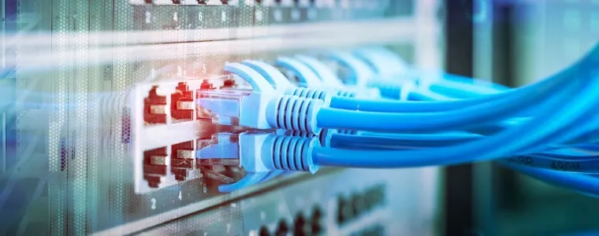é um sistema que interliga dois ou mais dispositivos de computação, como computadores, servidores e smartphones, para que possam trocar dados e compartilhar recursos como arquivos, impressoras e acesso à internet.
VGA
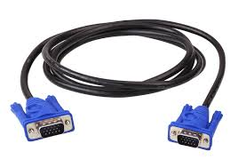é um padrão de interface analógica para saída de vídeo que foi amplamente utilizado para conectar computadores a monitores e outros dispositivos de exibição
HDMI
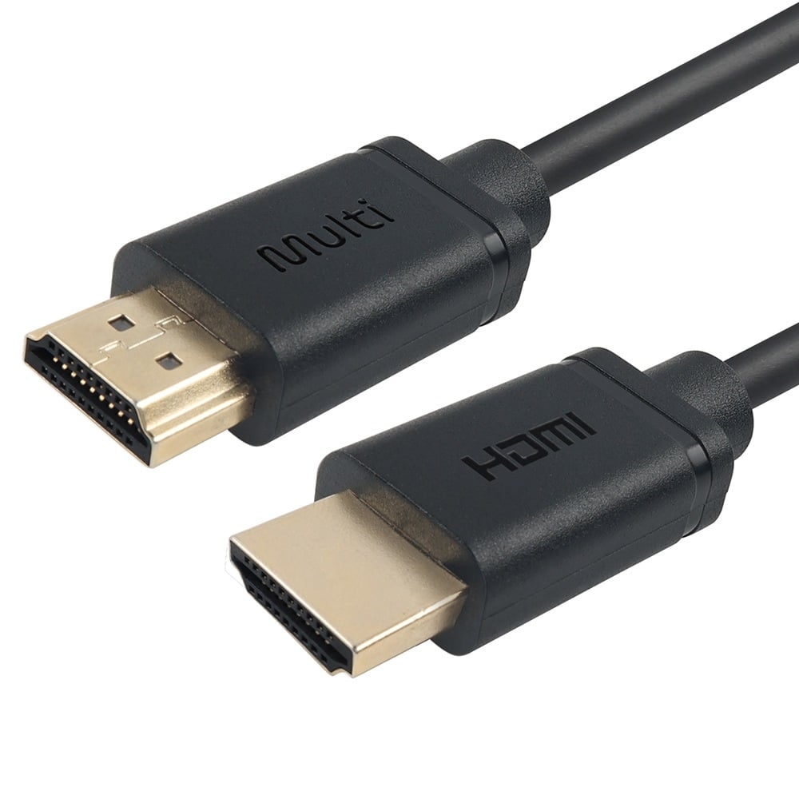é um padrão de interface analógica para saída de vídeo que foi amplamente utilizado para conectar computadores a monitores e outros dispositivos de exibição. Ele utiliza um conector físico de 15 pinos e transmite sinais de vídeo analógicos, sendo considerado uma tecnologia ultrapassada
USB
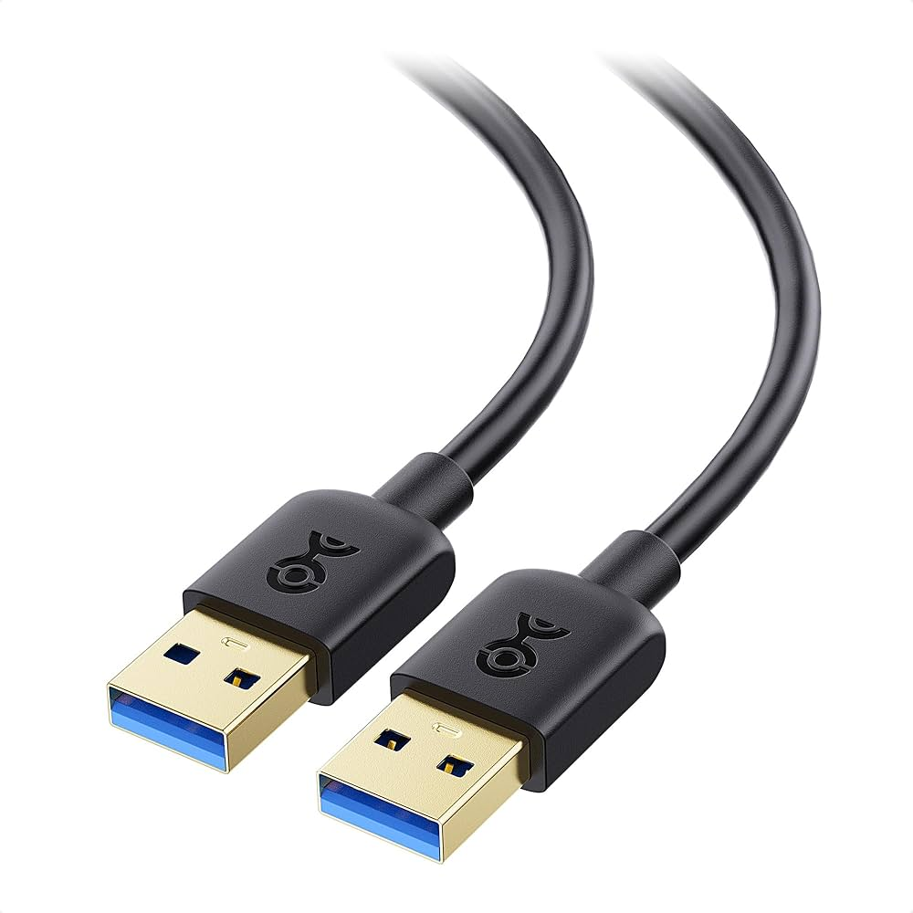é um padrão tecnológico que permite a conexão, comunicação e transferência de dados e energia entre computadores, periféricos e outros dispositivos eletrônicos